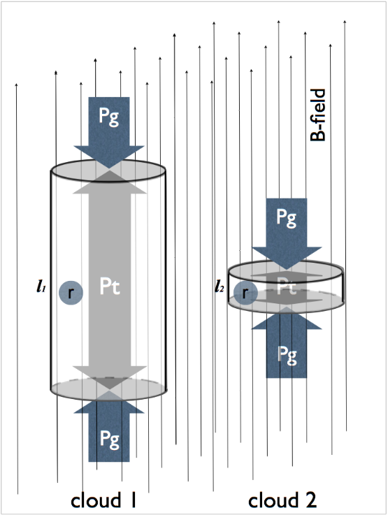
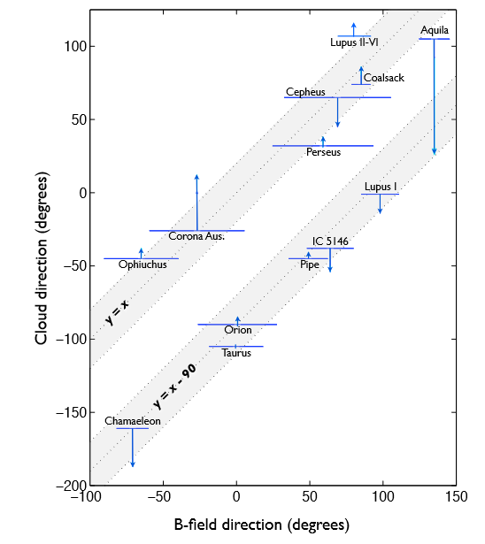

Jan-09-2019
Cao,Zhuo
This slide is hosted on https://caicairay.github.io
Li et al. 2013
 What about simulation?
The most staightforward method is to find out the ridges of filaments
We use
For more information, click HERE
DBSCAN
Covariance Matrix
Variance is a measure of the variability or spread in a set of data.
$$var(X) = \frac{1}{n} \sum_{i=1}^n (X_i-E(X))^2$$
However, variance can only be used to explain the spread of the data in the directions parallel to the axes of the feature space.
Covariance is a measure of the extent to which corresponding elements from two sets of ordered data move in the same direction.
$$cov(X,Y) = \frac{1}{n} \sum_{i=1}^n (X_i-E(X)) (Y_i-E(Y))$$
$$cov(X,X) \equiv var(X)$$
$$ M= \begin{bmatrix} cov(X,X) & cov(X,Y) \\ cov(Y,X) & cov(Y,Y) \\ \end{bmatrix} $$
$$ MV=V\Lambda $$
$$ V= \begin{bmatrix} \vec{v_1} & \vec{v_2} \\ \end{bmatrix} $$
$$ \Lambda=diag(\lambda_1, \lambda_2) $$
as dimensionality reduction
as Noise Filtering
Useful for:
Hand-written digits
Face id
...
A bit MORE